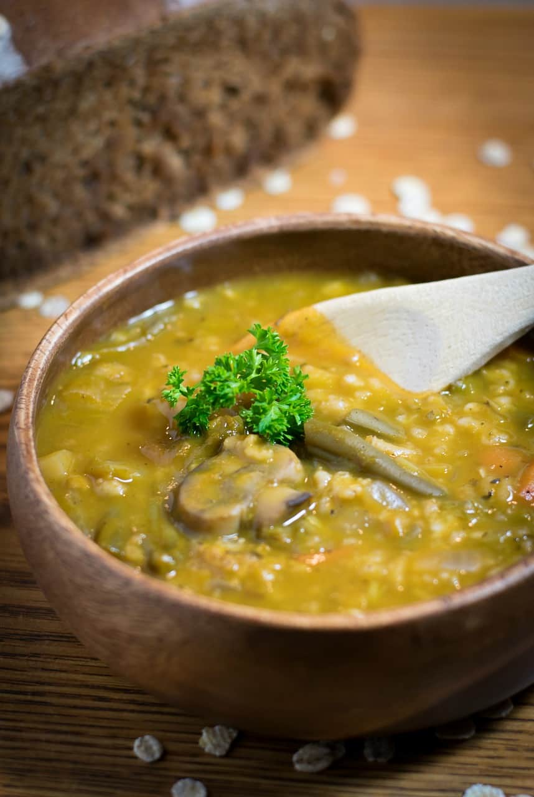

Medieval Pottage Stew

Description
Pottages were a staple of the peasants diet through
the 9th to the 17th century in Europe, being made by
boiling vegetables or grains, this recipe seeks to be
a recreation of that.
Ingredients
- 1 cup carrots (diced)
- 1 cup parsnips (diced)
- 1 cup onions (diced)
- 1 cup turnips (diced)
- 1 cup mushrooms (sliced)
- 1 cup leeks (diced)
- 1 cup cabbage (chopped)
- 1 cup green beans (chopped)
- 2 qts vegetable broth (low sodium)
- 1 bay leaf
- ½ tsp rubbed sage
- ½ tsp dried thyme
- ½ tsp dried rosemary
- ½ tsp black pepper
- ¾ tsp salt
- ½ cup red wine
- 1 Tbs balsamic vinegar
- ½ cup rolled oats
- ½ cup barley flakes
Steps
- Peel and chop all vegetables
- Add carrots, parsnips, onions, and turnips to a
large stew pot with about ¼ cup veg broth
- Saute for 10 minutes or until softened
- Add mushrooms, leeks, cabbage, and beans and
simmer for an additional 5 minutes
- Add broth, seasoning, and wine and stir well
- Bring to a boil, lower heat, and cover.
Simmer for 30 minutes.
- Stir in barley and oats and continue simmering,
uncovered, for an additional 20 minutes or
until grains are cooked
- Stir in vinegar, remove bay leaf, adjust seasonings,
and serve
Recipe by Brand New Vegan